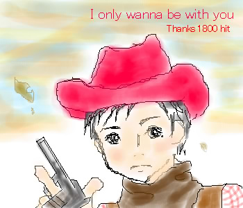

September.2002
1800hitのキリ番ゲットのくまりんさんからのリクエスト、熊ちゃんです。
設定は「おまかせ」と、おっしゃって下さいましたので、
最近やっと見る事ができた『君のそばにいたい』の熊ちゃんにさせて頂きました♪
セピアな空にするか迷ったあげく、こんな変な色になってしまいました…。
この曲、原曲は知ってたのですがこうアレンジされるとは！って感じでした。
三人のカウボーイ姿いいですよねぇ♪